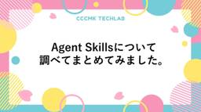
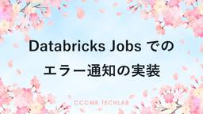

CCCMKホールディングス TECH LABの Tech Blog
https://techblog.cccmkhd.co.jp/
TECH LABのエンジニアが技術情報を発信しています
フィード
GPT-5 Codex 5.3とClaude Opus 4.6の画像認識性能比較
CCCMKホールディングス TECH LABの Tech Blog
こんにちは、テックラボの高橋です。今回はGPT-5 Codex（5.2/5.3）とClaude Opus 4.6のVLM（Vision Language Model）性能を比較してみました。Codexのreasoning.effortとClaudeのAdaptive thinkingパラメーターによる推論強度の違いも検証しています。Codex 5.3については、画像理解のベンチマークであるMMMU-Proの結果も取得しました。 背景 現在のGPT-5 Codexは画像入力に対応しています。コード生成に特化したCodexモデルですが、UIのあるアプリなど、目視でのテストが必要な開発の場合に画像認…
2日前

Agent Skillsについて調べてまとめてみました。
CCCMKホールディングス TECH LABの Tech Blog
はじめに こんにちは、CCCMKホールディングスAIエンジニアの三浦です。 3月になり、今年度もあと1か月になりました。節目の時は色々と考えることが多くなるな、と感じています。 Claude Code関連の情報で「Agent Skills」というコーディングAgentをカスタマイズする機能をよく目にします。私自身はGithub CopilotユーザーなのでClaude Codeユーザーじゃないと使えないのかな、と思っていたのですが、Agent Skills自体はオープンスタンダードで公開されているため、AIツールが対応していればClaude Code以外でも利用することが出来ます。もちろんGi…
4日前

Databricks Jobsでのエラー通知の実装
CCCMKホールディングス TECH LABの Tech Blog
こんにちは、テックラボの井上です。 テックラボでは内製で社内向けのモデリング＆スコアリングツールを開発しています。 学習・推論エンジンにDatabricks/Notebookを使って開発・運用しています。 幸いなことにこれまでエラーは滅多に起きないのでエラー通知機能を実装していなかったのですが、 機能追加によりエラーが起きる状況も出てきたためエラー通知機能を実装しました。 実装方法として以下の2案を検討しました。 案1）Databricksのジョブ機能の活用 案2）IPythonのエラーハンドリング機能の活用 それぞれの案について説明をします。 案1）Databricksのジョブ機能の活用 以…
5日前

Databricks Appsで動く、画像編集チャットアプリを開発してみました。
CCCMKホールディングス TECH LABの Tech Blog
こんにちは、CCCMKホールディングスAIエンジニアの三浦です。 この前の休日はとても暖かくて近所の公園ではたくさんの人がテントを張ってピクニックをしていました。外でご飯を食べるのってなんだか特別な感じがしていいなぁと思います。今度晴れたらやってみようかな、と思いました。 さて今回の記事ではDatabricksとGithub Copilotの勉強を兼ねて最近取り組んでいた、画像編集チャットアプリ開発の話をさせてください。 どんなアプリ？ 開発したのは資料などに使う画像をちょっと編集したい時に使えそうなアプリです。 アプリに編集したい画像をアップロードするとチャット画面が開き、編集したい内容をテ…
11日前
Azure Data Factoryで日付パラメータを自動計算する
CCCMKホールディングス TECH LABの Tech Blog
こんにちは、テックラボの岸部です。 普段の業務では、データエンジニアやデータサイエンティストとして、Azure Databricksでデータ処理を実装して、作成したデータを各DBやDWHに転送する、みたいなパイプラインを構築することが多いです。 複数のAzure Databricksのノートブックの実行を含むパイプラインを構築したり、それを自動化(スケジュール実行)する時に、Azure Data Factoryを活用してきました。 Azure Data Factoryでは、GUIで手軽にパイプラインを構築できるのはいいのですが、自動化にあたって、よく使うはずの日付パラメータの自動計算が結構大変…
15日前
Databricks Apps でカスタム MCP サーバーを動かしてみる
CCCMKホールディングス TECH LABの Tech Blog
はじめに こんにちは、CCCMKホールディングスAIエンジニアの三浦です。 最近 OpenAI の Agentic Commerce Protocol (ACP) や Google の Universal Commerce Protocol(UCP) など、商品を探すだけでなく決済まで Agent で自動化するための Agent 間のプロトコルの標準化が進みつつあります。 developers.openai.com ucp.dev こうした流れを見ていると、今後のシステム開発では人だけでなく AI が利用することも想定して進める必要があると感じています。 AI が使うことを想定した仕組みの代表…
19日前
Claude Opus 4.6とスキルを組み合わせて機械学習タスクを自動化する
CCCMKホールディングス TECH LABの Tech Blog
こんにちは、テックラボの高橋です。 今回はClaude Opus 4.6と自作のスキル群を使って、機械学習モデルの軽量化タスクを自動化できるか試してみました。本記事では、スキルの設計思想から実際の実験結果までをまとめていきます。 背景 LLMによるコーディングが非常に盛り上がっていますが、機械学習タスクは依然として手作業が多い領域です。データ準備、環境構築、訓練、評価、最適化、レポート作成と、各フェーズで異なるツールや手順が必要になります。 ターミナルで実行できるコーディングエージェントであるGitHub Copilot CLIやClaude Codeのスキル機能を使えば、これらの手順を再利用…
19日前
【プレスリリース】松尾研究所とCCCグループ、多様な生活者像をモデル化する「AIペルソナエージェント」共同開発を開始
CCCMKホールディングス TECH LABの Tech Blog
松尾研究所との共同開発の開始について、プレスリリースが掲載されました。 詳しくはこちらをご覧ください。 www.ccc.co.jp
23日前
Databricks Asset Bundlesを活用したDatabricks Apps開発
CCCMKホールディングス TECH LABの Tech Blog
はじめに こんにちは、CCCMKホールディングスAIエンジニアの三浦です。先日東京に雪が降りました。雪が降ると、いつもの見慣れた景色が全然違って見えて不思議な気持ちになりました。 最近社内向けのアプリをDatabricks Appsで提供する、といったことに取り組んでいました。それと並行してAI Agentを導入した開発体制にも着手しています。プロジェクトやイシュー、ソースコードの管理、CI/CDパイプラインの構築などです。そのような中で"Databricks Asset Bundles"というツールを使うとアプリを動かすのに必要なリソースやテスト用や本番用の環境の定義をYAMLで管理すること…
25日前
Marpで実現する、AIコーディングからプレゼンまでのシームレスなドキュメント作成
CCCMKホールディングス TECH LABの Tech Blog
こんにちは、CCCMKホールディングスAIエンジニアの三浦です。 最近では、技術調査からコーディングに至るまで、AIの活用が欠かせなくなってきました。 AIといっしょにタスクを進める際には、AIに与える指示からAIが作成する成果物まで、Markdownファイルを使うことがとても多くなっています。 Markdownファイルは AIが扱いやすく、人にとっても読みやすい形式ですが、ミーティングやプレゼンテーションの場では、個人的にはスライド資料のほうが説明しやすいと感じています。 そのため、AIと作成したMarkdownファイルの成果物をスライド資料に起こして、ミーティングに臨む、といったことを最近…
1ヶ月前
TiDBでRAGに対応したChatBotを作ってみました。
CCCMKホールディングス TECH LABの Tech Blog
こんにちは、CCCCMKホールディングスAIエンジニアの三浦です。 寒いですね。朝寒くてなかなか起きられないので、スマートフォンの目覚ましアラームを10分刻みでセットして二度寝しないようにしています。 最近TiDBというオープンソースの分散型SQLデータベースについて調べていました。TiDBはMySQLと互換性を持ちながら、従来の単一ノードRDBでは難しかった水平方向のスケール（スケールアウト）が可能なデータベースで、PingCAP社を中心に開発が進められています。 こちらの記事ではTiDBの性能検証がまとめられています。 techblog.cccmkhd.co.jp 私の方ではTiDBをアプ…
1ヶ月前
VSCodeで開発したアプリをDatabricks Appsにデプロイする～ローカル開発からデプロイまでの手順をまとめてみました～
CCCMKホールディングス TECH LABの Tech Blog
こんにちは、CCCMKホールディングスAIエンジニアの三浦です。 最近社内向けアプリをGithub Copilotを使って開発する機会が増えてきました。Github Copilotを使うとローカルで動作するデモアプリの開発まではあっという間に進んでしまいます。その後本番運用に乗せようとするとインフラの構築等々が必要になるのですが、デモアプリ～本番運用までの手順をもう少し簡潔に出来ないかな、と考えるようになりました。 私が普段作るアプリはそれほど複雑な構成のものではなく、Pythonだけで動くものがほとんどです。ふとこの構成だったらDatabricks Appsをアプリの提供基盤として使うのがい…
2ヶ月前
NotebookLMでスライド作成後のPDFの編集について
CCCMKホールディングス TECH LABの Tech Blog
こんにちは、テックラボの井上です。 NotebookLM の勢いが凄いですね！社内でも活用が広がりつつあります。 とくに スライド生成機能 は注目度が高く、業務で使い始めている方も増えてきました。 とはいえ、現時点では 生成後のスライドを直接編集できない という制約があり、実務上の課題も見えてきています。 （Google 側もこの課題を認識しているようなので、今後のアップデートに期待したいところです。） 1. なぜ「スライド編集問題」が起きるのか NotebookLM のスライド生成は、インプット素材から一気に 完成形に近い PDF を出力してくれるという、非常に強力な機能です。 しかし PD…
2ヶ月前
AIとの開発に向けた開発環境の整理整頓～uvの導入～
CCCMKホールディングス TECH LABの Tech Blog
こんにちは、CCCMKホールディングスAIエンジニアの三浦です。 AI Agentを使って開発をしていると、自分が詳しく知らない言語やフレームワークを使って大量のコードを書き出してしまうことが多く、自分で開発しているはずなのにどこか地に足がついていないような感覚に陥ることがよくあります。 自分にとって未知の技術を使われてしまうと開発した成果物に対する説明が十分に出来なくなってしまうため、これは避けたい事象です。 AI Agentをうまく制御出来ない時、大抵自分自身の基準がぶれていたり定まっていない時がほとんどです。AI Agentがよく分からないフレームワークや言語を使ってしまうのも、開発にお…
2ヶ月前
GitHub Copilotをもっと使いこなす！「Custom Instructions」・「Custome Agents」・「Prompt Files」について調べました。
CCCMKホールディングス TECH LABの Tech Blog
はじめに こんにちは、CCCMKホールディングスAIエンジニアの三浦です。 あけましておめでとうございます。今年もよろしくお願いします。 2026年はAI Agentを活用して開発・運用体制を強化していきたい、と考えており、年末年始は特にAI Agentによるソフトウェア開発周りの情報収集をしていました。私たちは昨年よりGithub Copilotを使い始めているため、本ツールを中心に調査をしていました。 Github CopilotのAgentモードを使うと数行のプロンプトを打ち込めばあっという間に大量のコードを生成することが出来ます。しかし細かい仕様を伝えるのが難しかったりちょっとしたプロ…
2ヶ月前
Agentic DevOpsについて調べてSpec-Driven開発にチャレンジしてみた話。
CCCMKホールディングス TECH LABの Tech Blog
こんにちは、CCCMKホールディングスAIエンジニアの三浦です。 クリスマスが過ぎて、いよいよ2025年も終わりだな、という気持ちになってきました。今年は"AI Agent"がとてもメジャーになり、DifyのようなAI Agentを誰もが構築できる仕組みも浸透してきました。「AI Agentの開発」はエンジニアの専門領域ではなくなってきているように感じます。 そんな中、2026年にエンジニアとしてチャレンジしたいと考えているのが"Agentic DevOps"です。Agentic DevOpsについてはMicrosoftのブログでも述べられていますが、ソフトウェア開発から運用に至るライフサイク…
2ヶ月前
数万QPSのポイント基盤をNewSQLで実現できるのか - TiDB性能検証の中間報告
CCCMKホールディングス TECH LABの Tech Blog
[TiDB中間検証 こんにちは、テクノロジー戦略本部の松井と申します。 弊社は会員数1.3億人のVポイントサービスを運営しております。 その中でテクノロジー戦略本部は、Vポイント基盤やVポイントアプリ、それに付随する各マイクロサービス、また分析を行うデータ基盤、データサイエンス、AI領域などの幅広い領域の開発と運用を担っており、私は現在その責任者をしております。 はじめに：大規模トランザクション基盤の課題 当社が運用するVポイントシステムは、1.3億人規模のユーザーを抱え、ピーク時には数万QPSのクエリ処理が求められる大規模システムです。 インフラを最新化しつつ、15年以上にわたり安定稼働して…
2ヶ月前
DatabricksでOLTPデータベースが作れる！Lakebaseを試してみました！
CCCMKホールディングス TECH LABの Tech Blog
＜この記事は🎄Databricks Advent Calendar 2025🎁におけるシリーズ2の23 日目の記事です。＞ こんにちは、CCCMKホールディングスAIエンジニアの三浦です。 この前の日曜日に街に出かけたらクリスマスの雰囲気でとても賑やかでした。普段見慣れた景色がいつもと違うように見えて、特別感があっていいな、と思いました。 さて、今年6月にDatabricksのDATA+AI Summitに参加したのですが、そこで発表されたLakebaseという機能をそういえばちゃんと触っていないことに気が付きました。 www.databricks.com DATA+AI Summitで初めて…
2ヶ月前
RAGの検索精度を上げる"HyDE"の論文を読んでDifyで試してみました。
CCCMKホールディングス TECH LABの Tech Blog
こんにちは、CCCMKホールディングスAIエンジニアの三浦です。 最近DifyというAIアプリケーション開発プラットフォームについて調べていました。社内の有志のメンバーでDifyについて発表しあう会があり、そこに向けて自分も発表の準備をしていたからです。 テーマは何にしようかな・・・と考え、最終的にDifyで組むことが多いRAG(Retrieval-Augmented Generation)の性能をDifyで出来るちょっとした工夫で改善する方法を調べてみることにしました。 RAGのSurvey論文 RAGに関するさまざまな手法を調べるに当たり、最初に目を通したのが以下のRAGのSurvey論文…
3ヶ月前
Microsoft FabricでSharePoint上のデータにアクセスしてみました。
CCCMKホールディングス TECH LABの Tech Blog
こんにちは、CCCCMKホールディングスAIエンジニアの三浦です。 気がついたらもう2025年も残りわずかです。今年はいつもよりも技術イベントに参加させていただく機会がとても多く、そういった機会を通じて自分自身多くのことを学べたと思います。これからも引き続き色々なイベントに参加できるよう、学び続けることと体力を維持し続けることを意識していきたいと思っています。 最近MicrosoftのFabricを調査していました。Microsoft Fabricは統合データ分析プラットフォームで、データの取り込みから保存、処理、分析、可視化までを一元的に実行できるSaaS型サービスです。SparkやDelt…
3ヶ月前
LLMを用いたアバターの会話制御 ～AI増田宗昭の内側の仕組み～
CCCMKホールディングス TECH LABの Tech Blog
こんにちは。テックラボの高橋です。 テックラボでは、CCC創立40周年を記念して、CCC創業者である増田宗昭会長（以下「増田会長」）の人格を再現した対話型AI「AI増田宗昭」を開発しました。 本記事では、アバターの会話制御に用いた仕組みを簡単にご紹介します。 www.ccc.co.jp データクリーニング LLM APIの開発において、重要なものにデータのクリーニングがあります。 本プロダクトはRAG（Retrieval-Augmented Generation）を用いており、 アバターの回答に用いる知識の部分はRAGでの参照データが主となります。 RAGの参照先のデータには、過去の増田会長の…
3ヶ月前
Microsoft FoundryでAgentを作ってみる。
CCCMKホールディングス TECH LABの Tech Blog
こんにちは、CCCMKホールディングスAIエンジニアの三浦です。 先日株式会社宣伝会議様が運営されている広告界の情報プラットフォーム「AdverTimes.」にインタビュー記事を公開していただきました。タイトルにあるように、CCCの会長のAIを開発した話です。自分自身も読んでてとても面白い内容でしたので、ぜひご覧ください。 www.advertimes.com さて、前回Microsoft Foundryを少し触ってみたお話をご紹介しました。 techblog.cccmkhd.co.jp 今回はドキュメントを参照して回答が出来るAgentをMicrosoft Foundryで構築してみました。…
3ヶ月前
AIチャットボットのストリーミング対応とセキュリティ
CCCMKホールディングス TECH LABの Tech Blog
こんにちは、テックラボの伊藤です。 弊社は2025年9月20日に、CCC創業者である増田宗昭会長（以下「増田会長」）の人格を再現した対話型AI「AI増田宗昭」を公開しました。 本記事では、このシステムにおけるLLM APIのストリーミング対応とセキュリティ対策の実装について解説します。 AI増田宗昭の概要 「AI増田宗昭」は、CCC創業者である増田会長の人格を再現する対話型AIです。 システムプロンプトとRAG（Retrieval-Augmented Generation）によって、増田会長の過去の発言を参照しながら回答を生成し、文章と音声で回答します。 「AI増田宗昭」のバックエンドは、以下…
3ヶ月前
CCC創立40周年記念「AI増田宗昭」- 創業者の人格をデジタル空間で再現した対話システムのご紹介
CCCMKホールディングス TECH LABの Tech Blog
こんにちは。テックラボの高橋です。 テックラボでは、CCC創立40周年を記念して、AIアバターである「AI増田宗昭」を開発しました。 本記事ではその技術的な概要をご紹介します。 概要 「AI増田宗昭」は、CCCの創業者である増田宗昭会長（以下「増田会長」）の知見や思考をAIで再現し、3Dアバターを通じてユーザーが対話できるようにするシステムです。 サイトの画面上ではテキスト / 音声入力を通じて増田会長に好きな質問を投げかけることができます。生成された回答は、増田会長本人の声を模した音声として出力されます。 本プロジェクトでは、テックラボは過去取り組んでいたプロジェクトの知見を活かし、LLMに…
3ヶ月前
Vibe CodingによるRAGアプリの構築
CCCMKホールディングス TECH LABの Tech Blog
はじめに こんにちは、テックラボの伊藤です。 最近よく聞く「Vibe Coding」ですが、これまでちゃんと試したことがありませんでした。 テックラボでは、過去に木下さんがVibe Codingによる機械学習モデルの構築を行っていましたが、今回はVibe Codingによるアプリ開発にチャレンジしてみました。 作ったものは、動画の音声を文字起こしした内容をもとに、RAG（Retrieval-Augmented Generation）で回答生成するアプリです。 この記事では、 どんな手順でVibe Codingを進めたか ChatGPT / GitHub Copilotとの付き合い方 良かった点…
3ヶ月前
Microsoft Igniteで見たMicrosoft Foundryについて調べて少し触ってみる。
CCCMKホールディングス TECH LABの Tech Blog
こんにちは、CCCMKホールディングスAIエンジニアの三浦です。 アメリカのサンクスギビングデーという行事を知りました。友達や家族とお互い感謝の気持ちを伝えあう日、とのことです。 誰かを感謝するための祝日はいくつかありますが、お互いが感謝の気持ちを伝えあう日ってなかなかないのでいいな、と思いました。 はじめに 先週Microsoftが毎年開催している技術者向けのカンファレンスMicrosoft Igniteが開催されました。 ignite.microsoft.com 会場はサンフランシスコのMoscone Centerでした。snowflake, databricksのSummitが開催された…
3ヶ月前
Qwen-Image-Edit-2509を試してみました。
CCCMKホールディングス TECH LABの Tech Blog
Qwen-Image-Edit-2509をdatabricks notebookで動かしてみました。
4ヶ月前
Databricks managed MCP serverをLangChain MCP Adaptersで利用してサクッとデータ分析AI Agentを作ってみる。
CCCMKホールディングス TECH LABの Tech Blog
こんにちは、CCCMKホールディングスAIエンジニアの三浦です。 もう11月です。寒くなってきて体調を崩しやすくなってきているので、体調管理には気を付けないと・・・と思っています！ "MCP"というワードを頻繁に聞くようになりました。私も以前調べたことがあって、その内容についてはこちらの記事にまとめています。 techblog.cccmkhd.co.jp 最近databricksが"managed MCP server"というMCP serverをBeta版で提供していることを知りました。これを利用するとdatabricksのworkspaceに構築したvector searchやgenie …
4ヶ月前
AI時代のRAG開発で改めて痛感する「ドキュメント管理」の壁
CCCMKホールディングス TECH LABの Tech Blog
はじめに こんにちは。テックラボの井上です。 現在、AI開発の活発化は業種・企業規模を問わず見られる現象ですが、弊社テックラボでも様々なAI関連プロジェクトが進行しています。そして、これらのプロジェクトを推進する中で、私たちはある共通の、かつ本質的な課題に直面しています。それは、「ドキュメント管理」の重要性です。 🤖 AI開発の「前処理」としてのドキュメントの存在 機械学習やデータ分析の世界では、データの前処理に多くの工数が割かれます。これは、RAG（Retrieval-Augmented Generation）のようなAIアプリケーション開発においても同様です。 RAGの精度向上というと、モ…
4ヶ月前
Microsoft GraphRAGの3つの検索方法について調べてみました。
CCCMKホールディングス TECH LABの Tech Blog
こんにちは、CCCMKホールディングスAIエンジニアの三浦です。 だいぶ寒くなってきました。近所の街路樹は少しずつ紅葉をはじめたようです。 前回MicrosoftのGraphRAG(MS GraphRAG)というKnowledge GraphとLLMを組み合わせたフレームワークをご紹介しました。 techblog.cccmkhd.co.jp 前回は主にGraphRAGでどのようにKnowledge Graphを構築しているのかに焦点を当てて調べましたが、今回はどのようにKnowledge Graphから情報を検索するのかに焦点を当てて調べたことをまとめてみたいと思います。 MSのGraphRA…
4ヶ月前